Warzywa, które mogą być pożywieniem dla świniaczków. Wraz z porcjowaniem i opisem składników odżywczych, które dostarczają
| Zdjęcie | Warzywo | Kalorie | P (g) |
S (g) | Ca (mg) | P (mg) | Wit. C (mg) | Wit. A (mg) | Kwas szczawiowy (mg) | Stosunek Ca:P | Grupa | Komentarz |
|---|---|---|---|---|---|---|---|---|---|---|---|---|
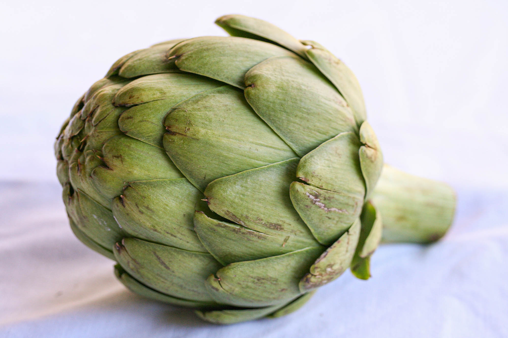 |
Karczoch | 47 | 3,27 | 0 | 44 | 90 | 11,7 | 0 | - | 0,5:1 | B | - |
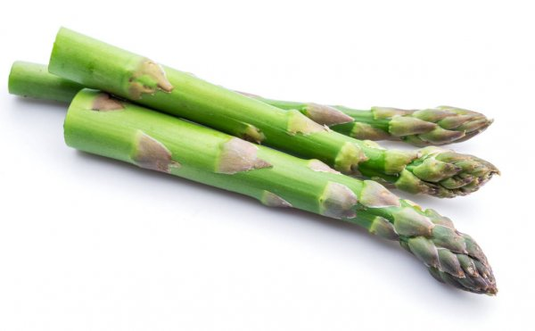 |
Szparagi | 20 | 2,20 | 1,88 | 24 | 52 | 5,6 | 38 | 130 | 0,5:1 | C | - |
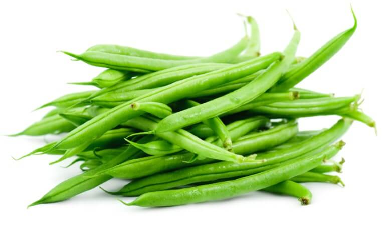 |
Fasola | 31 | 1,82 | 1,40 | 37 | 38 | 16,3 | 35 | 360 | 1,0:1 | B | 1-2 strączki na świnke |
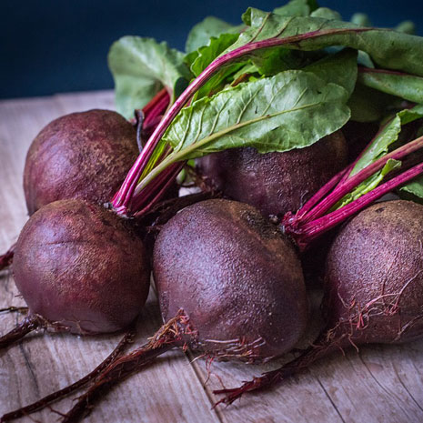 |
Burak | 43 | 1,61 | 6,76 | 16 | 40 | 4,9 | 2 | - | 0,4:1 | C | - |
 |
Brokuł | 34 | 2,82 | 1,70 | 47 | 66 | 89,2 | 33 | 190 | 0,7:1 | C | bardzo gazotwórczy, tylko małe ilości |
 |
Brukselka | 43 | 3,38 | 2,20 | 42 | 69 | 85 | 38 | 360 | 0,6:1 | C | bardzo gazotwórcza, tylko małe ilości |
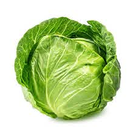 |
Kapusta biała | 24 | 1,44 | 3,58 | 47 | 23 | 32,2 | 9 | 100 | 2,0:1 | B | bardzo gazotwórcza, tylko małe ilości |
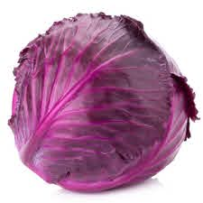 |
Kapusta czerwona | 31 | 1,43 | 3,91 | 45 | 30 | 57 | 56 | 100 | 1,5:1 | B | bardzo gazotwórcza, tylko małe ilości |
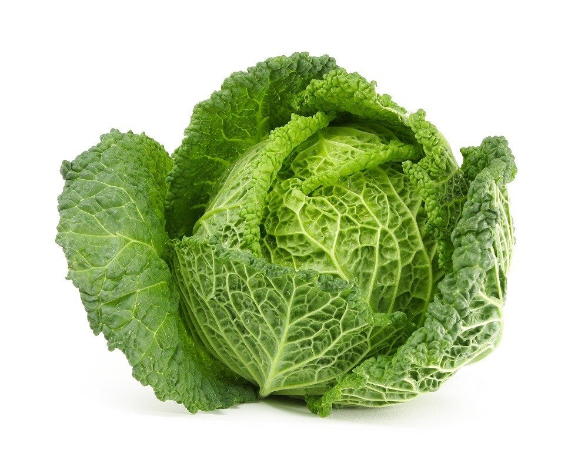 |
Kapusta włoska | 27 | 2,00 | 2,27 | 35 | 42 | 31 | 50 | 100 | 0,8:1 | B | bardzo gazotwórcza, tylko małe ilości |
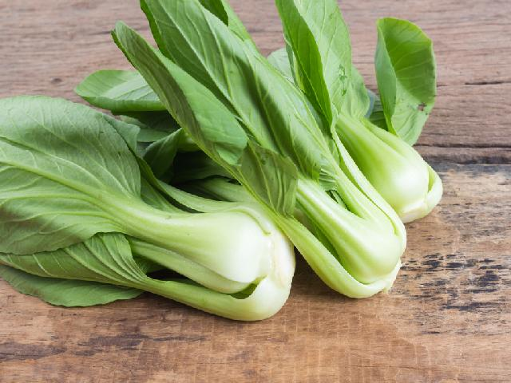 |
Kapusta chińska | 13 | 1,50 | 1,18 | 105 | 37 | 45 | 223 | - | 2,8:1 | C | bardzo gazotwórcza, tylko małe ilości |
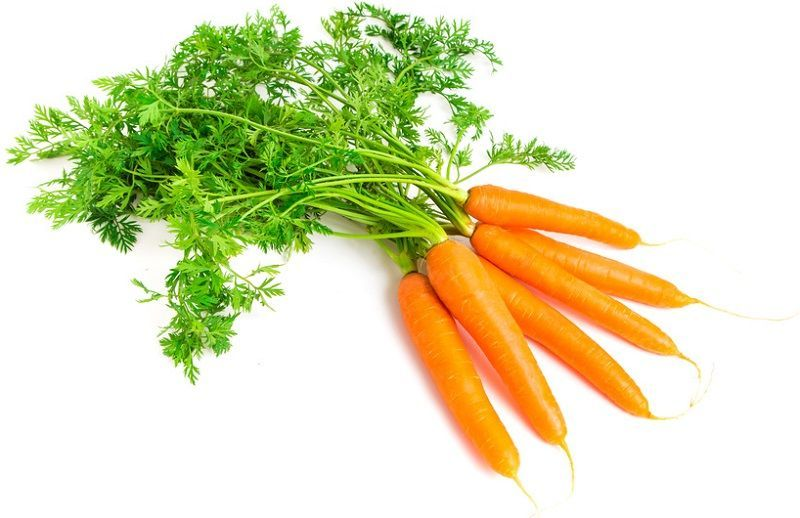 |
Marchew (młoda) | 1 | 0,06 | 0,48 | 3 | 3 | 0,8 | 69 | 50 | 1,0:1 | A | 1 na dzień jest OK |
 |
Kalafior | 25 | 1,98 | 2,40 | 22 | 44 | 46,4 | 1 | 150 | 0,5:1 | C | bardzo gazotwórcza, tylko małe ilości |
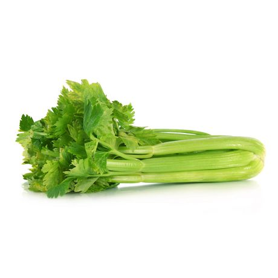 |
Seler naciowy | 14 | 0,69 | 1,83 | 40 | 24 | 3,1 | 22 | 190 | 1,7:1 | B | Potnij w kawałeczki, usuń włókna |
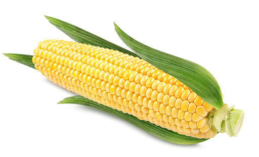 |
Kukurydza | 77 | 2,90 | 2,90 | 2 | 80 | 6,1 | 9 | 009 | 0,3:1 | C | mogą być karmione codziennie łuskami i jedwabiem kukurydzy |
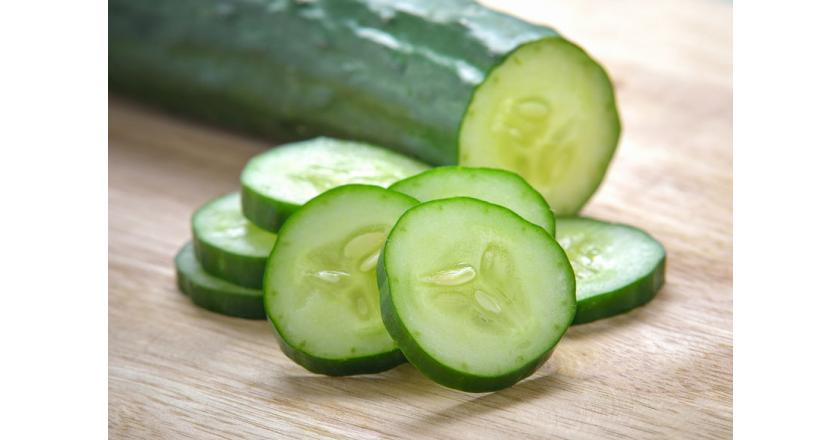 |
Ogórek | 15 | 0,65 | 1,67 | 16 | 24 | 2,8 | 5 | 020 | 0,7:1 | B | - |
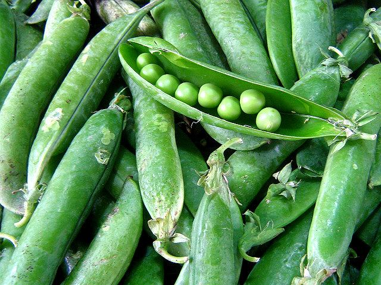 |
Groszek | 42 | 2,80 | 4,00 | 43 | 53 | 60 | 54 | 050 | 0,8:1 | B | 1-2 strączki na świnkę |
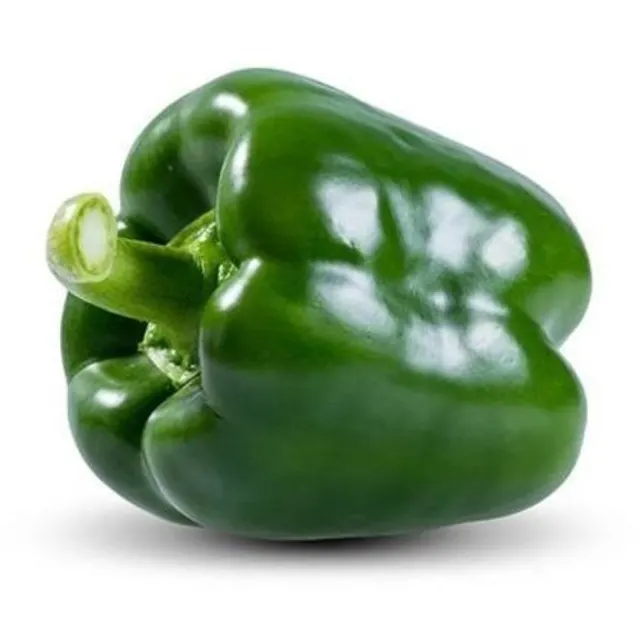 |
Papryka zielona | 20 | 0,86 | 2,40 | 10 | 20 | 80,4 | 18 | 040 | 0,5:1 | A | - |
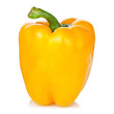 |
Papryka żółta | 27 | 1,00 | - | 11 | 24 | 183 | 10 | 0,40 | 0,5:1 | A | - |
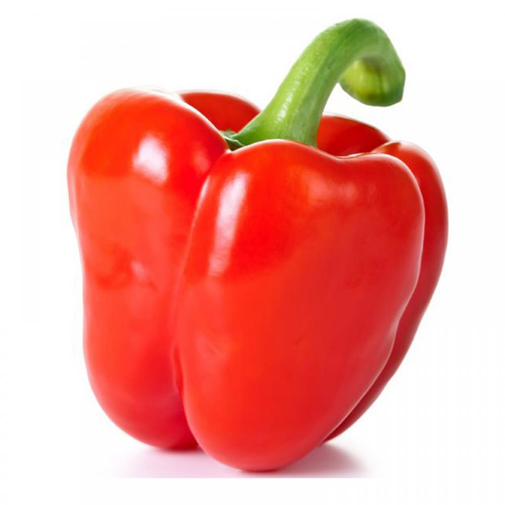 |
Papryka czerwona | 26 | 0,99 | 4,20 | 7 | 26 | 190 | 157 | 040 | 0,3:1 | B | wysoka zawartość cukru |
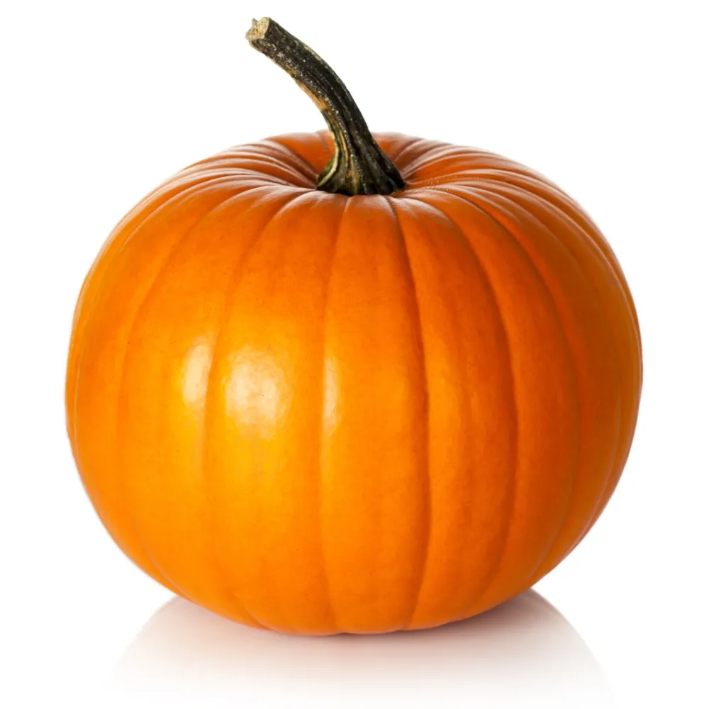 |
Dynia | 26 | 1,00 | 1,36 | 21 | 44 | 9 | 369 | - | 0,5:1 | C | nie karm świnek pestkami |
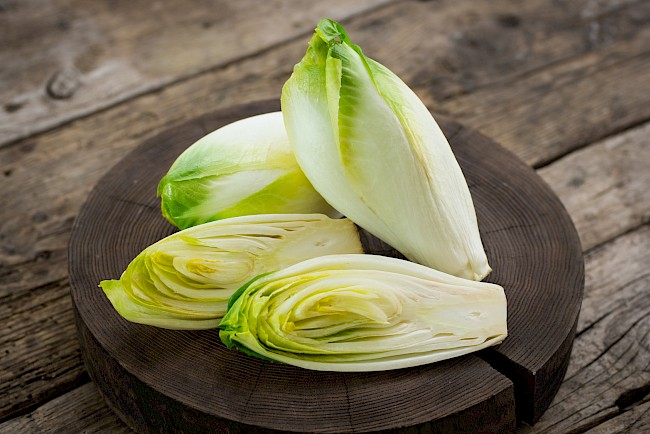 |
Cykoria sałatowa | 23 | 1,43 | 0,60 | 19 | 40 | 8 | 1 | - | 0,5:1 | A | - |
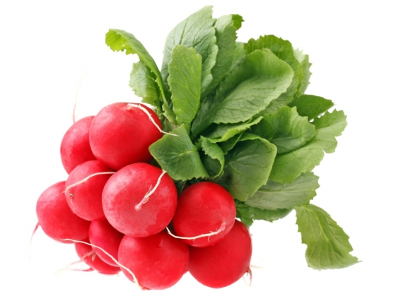 |
Rzodkiewka | 16 | 0,68 | 2,12 | 25 | 20 | 14,8 | 0 | 480 | 1,3:1 | B | wysoka zawartość szczawianów |
 |
Batat | 86 | 1,57 | 4,18 | 30 | 47 | 2,4 | 709 | 240 | 0,6:1 | D | wysoka zawartość cukru i szczawianów |
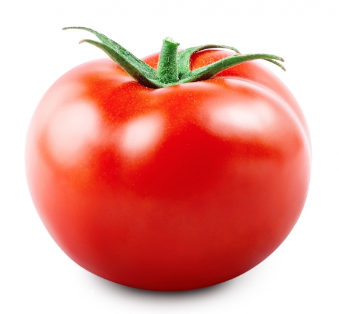 |
Pomidor | 18 | 0,88 | 2,63 | 10 | 24 | 12,7 | 42 | - | 0,4:1 | B | - |
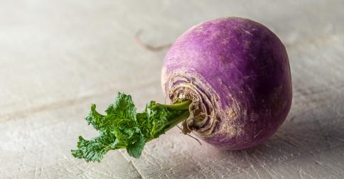 |
Rzepa | 28 | 0,90 | 3,80 | 30 | 27 | 21 | 0 | 210 | 1,1:1 | C | wysoka zawartość cukru i szczawianów |
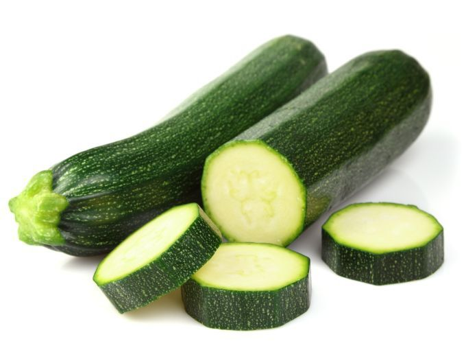 |
Cukinia | 16 | 1,21 | 1,73 | 15 | 38 | 17 | 10 | 020 | 0,4:1 | A | - |